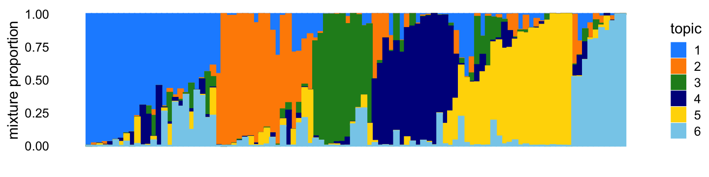
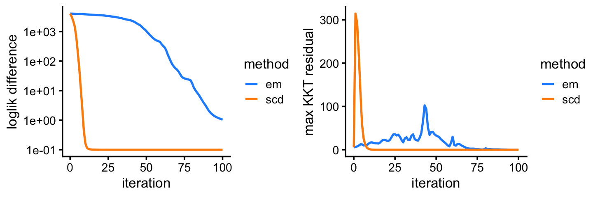

Last updated: 2021-03-07
Checks: 7 0
Knit directory: fastTopics-experiments/analysis/
This reproducible R Markdown analysis was created with workflowr (version 1.6.2.9000). The Checks tab describes the reproducibility checks that were applied when the results were created. The Past versions tab lists the development history.
Great! Since the R Markdown file has been committed to the Git repository, you know the exact version of the code that produced these results.
Great job! The global environment was empty. Objects defined in the global environment can affect the analysis in your R Markdown file in unknown ways. For reproduciblity it’s best to always run the code in an empty environment.
The command set.seed(1) was run prior to running the code in the R Markdown file. Setting a seed ensures that any results that rely on randomness, e.g. subsampling or permutations, are reproducible.
Great job! Recording the operating system, R version, and package versions is critical for reproducibility.
Nice! There were no cached chunks for this analysis, so you can be confident that you successfully produced the results during this run.
Great job! Using relative paths to the files within your workflowr project makes it easier to run your code on other machines.
Great! You are using Git for version control. Tracking code development and connecting the code version to the results is critical for reproducibility.
The results in this page were generated with repository version bf10490. See the Past versions tab to see a history of the changes made to the R Markdown and HTML files.
Note that you need to be careful to ensure that all relevant files for the analysis have been committed to Git prior to generating the results (you can use wflow_publish or wflow_git_commit). workflowr only checks the R Markdown file, but you know if there are other scripts or data files that it depends on. Below is the status of the Git repository when the results were generated:
Ignored files:
Ignored: data/newsgroups.RData
Ignored: data/nips.RData
Ignored: output/newsgroups/fits-newsgroups.RData
Ignored: output/nips/fits-nips.RData
Note that any generated files, e.g. HTML, png, CSS, etc., are not included in this status report because it is ok for generated content to have uncommitted changes.
These are the previous versions of the repository in which changes were made to the R Markdown (analysis/smallsim.Rmd) and HTML (docs/smallsim.html) files. If you’ve configured a remote Git repository (see ?wflow_git_remote), click on the hyperlinks in the table below to view the files as they were in that past version.
| File | Version | Author | Date | Message |
|---|---|---|---|---|
| Rmd | bf10490 | Peter Carbonetto | 2021-03-07 | workflowr::wflow_publish(“smallsim.Rmd”) |
| html | 50f34a9 | Peter Carbonetto | 2021-03-07 | Added explanatory text to “smallsim” example. |
| Rmd | f5516ac | Peter Carbonetto | 2021-03-07 | workflowr::wflow_publish(“smallsim.Rmd”) |
| html | 1185ab4 | Peter Carbonetto | 2021-03-07 | Revised the progress plots in the “smallsim” demo. |
| Rmd | f783c31 | Peter Carbonetto | 2021-03-07 | workflowr::wflow_publish(“smallsim.Rmd”) |
| html | 7e3d55b | Peter Carbonetto | 2021-03-07 | Adjusted parameters for second simulation in “smallsim” demo. |
| Rmd | 6e8a2c4 | Peter Carbonetto | 2021-03-07 | workflowr::wflow_publish(“smallsim.Rmd”) |
| html | 913316c | Peter Carbonetto | 2021-03-07 | Added structure plots to “smallsim” demo. |
| Rmd | b9fac71 | Peter Carbonetto | 2021-03-07 | workflowr::wflow_publish(“smallsim.Rmd”) |
| Rmd | 01898db | Peter Carbonetto | 2021-03-06 | Added some text to smallsim.Rmd. |
| html | 51c5321 | Peter Carbonetto | 2021-03-06 | Made some improvements to “smallsim” demo. |
| Rmd | 5983a39 | Peter Carbonetto | 2021-03-06 | workflowr::wflow_publish(“smallsim.Rmd”) |
| Rmd | eff0954 | Peter Carbonetto | 2021-03-06 | Added some explanatory text to smallsim.Rmd. |
| html | eff0954 | Peter Carbonetto | 2021-03-06 | Added some explanatory text to smallsim.Rmd. |
| html | 59a8594 | Peter Carbonetto | 2021-03-05 | Revised the simulations slightly. |
| Rmd | 1a59342 | Peter Carbonetto | 2021-03-05 | workflowr::wflow_publish(“smallsim.Rmd”) |
| html | ffad471 | Peter Carbonetto | 2021-03-05 | Build site. |
| Rmd | cfc44e5 | Peter Carbonetto | 2021-03-05 | workflowr::wflow_publish(“smallsim.Rmd”) |
| html | 52759e5 | Peter Carbonetto | 2021-03-05 | Added first simulation to “smallsim” demo. |
| Rmd | fe510f0 | Peter Carbonetto | 2021-03-05 | workflowr::wflow_publish(“smallsim.Rmd”) |
| html | b6458fe | Peter Carbonetto | 2021-03-05 | Built a first draft of the “smallsim” demo. |
| Rmd | d0db5de | Peter Carbonetto | 2021-03-05 | workflowr::wflow_publish(“smallsim.Rmd”) |
| Rmd | 275fb51 | Peter Carbonetto | 2021-03-05 | Implemented functions simulate_sizes and simulate_factors. |
This is a small numerical experiment to give some intuition for why the EM algorithm for Poisson NMF performs poorly in some settings. This example suggests that the EM updates have difficulty with correlations between topics, even when they are quite modest,
Load the packages used in the analysis below, as well as additional functions that we will use to simulate the data.
library(fastTopics)
library(mvtnorm)
library(ggplot2)
library(cowplot)
source("../code/smallsim_functions.R")Set the seed so that the results can be reproduced.
set.seed(1)In this first example, we simulate a \(100 \times 400\) counts matrix from a multinomial topic model with \(K = 6\) topics.
n <- 100
m <- 400
k <- 6
S <- 13*diag(k) - 2
F <- simulate_factors(m,k)
L <- simulate_loadings(n,k,S)
s <- simulate_sizes(n)
X <- simulate_multinom_counts(L,F,s)
X <- X[,colSums(X > 0) > 0]The topic proportions for each of the 100 samples—that is, a row of the counts matrix—are randomly drawn according to the correlated topic model: \(\eta_i\) for row \(i\) is drawn from the multivariate normal with mean zero and covariance matrix \(S\), such that \(s_{kk} = 11\), \(s_{jk} = -2\) for all \(j \neq k\). Generated in this way, the topic proportions tend to be roughly orthogonal:
y <- apply(L,1,which.max)
y <- rank(y,ties.method = "random")
y <- qqnorm(y,plot.it = FALSE)$x
fit <- list(L = L)
class(fit) <- c("multinom_topic_model_fit","list")
structure_plot(fit,topics = 1:6,perplexity = 30,Y_init = matrix(y),
verbose = FALSE)
| Version | Author | Date |
|---|---|---|
| 913316c | Peter Carbonetto | 2021-03-07 |
Here we compare two different updates for fitting a Poisson NMF model to the simulated counts: EM updates, and sequential coordinate descent (SCD). The model fitting is initialized by first running 50 EM updates, with the aim of better ensuring that the same local maximum is recovered by both runs.
fit0 <- fit_poisson_nmf(X,k,numiter = 50,method = "em",
control = list(extrapolate = FALSE,numiter = 4))
fit1 <- fit_poisson_nmf(X,fit0 = fit0,numiter = 450,method = "em",
control = list(extrapolate = FALSE,numiter = 4))
fit2 <- fit_poisson_nmf(X,fit0 = fit0,numiter = 450,method = "scd",
control = list(extrapolate = FALSE,numiter = 4))
fit1 <- poisson2multinom(fit1)
fit2 <- poisson2multinom(fit2)This next plot shows the improvement in the solution over time for the EM and SCD updates.
pdat<-rbind(data.frame(x=1:500,y=-fit1$progress$loglik.multinom,method="em"),
data.frame(x=1:500,y=-fit2$progress$loglik.multinom,method="scd"))
pdat <- subset(pdat,x >= 50)
ggplot(pdat,aes(x = x,y = y,color = method)) +
geom_line(size = 0.75) +
scale_color_manual(values = c("dodgerblue","darkorange")) +
labs(x = "iteration",y = "negative log-likelihood") +
theme_cowplot(font_size = 10)
Among the two methods compared, the SCD updates progresses more rapidly toward a solution. Still, the EM updates recover the same solution after a reasonable number of iterations. Next we will see an example in which EM updates fail to make reasonable progress.